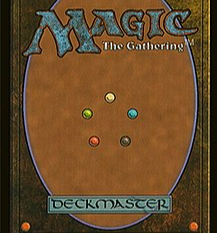

Origen de MtG
Magic: The Gathering y frecuentemente abreviado como Magic, MTG y Cartas Magic, es un juego de cartas coleccionables diseñado en 1993 por Richard Garfield, profesor de matemáticas, y comercializado por la empresa Wizards of the Coast.

Aunque todas las cartas tengan dibujos diferentes, la parte trasera de cada carta es idéntica a lo largo de todas las expansiones. Combinando el conocido color marrón propio de otros juegos de cartas coleccionables con unas pequeñas bolas de colores.
¿Sabíais que dichas bolas se corresponden con cada uno de los colores que puede tener una carta en el Magic?
Vídeos promocionales
Debido a la gran influencia de la fantasía en la temática de sus cartas, Magic siempre ha ofrecido a sus usuarios trailers animados para anunciar sus expansiones.
Estos últimos años, podemos decir que los altos cargos de esta propiedas intelectual, no escatiman a la hora de hacer sus vídeos. Debajo te dejamos el relativo a la expansión de "La hora de La Devastación".
¿Crees que es tan asombroso como les ha parecido a los críticos o no te resulta la gran cosa?
Temas musicales
A pesar de que la música en un principio no era uno de los elementos más representativos de MTG, con el lanzamiento de su juego digital, se han creado muchas pistas de música para acompañar los combates online.
Una de las bandas sonoras favoritas de los fanáticos de Magic ha sido la del tema de Innistrad, a continuación puedes escucharlo con solo clicar el reproductor de música.